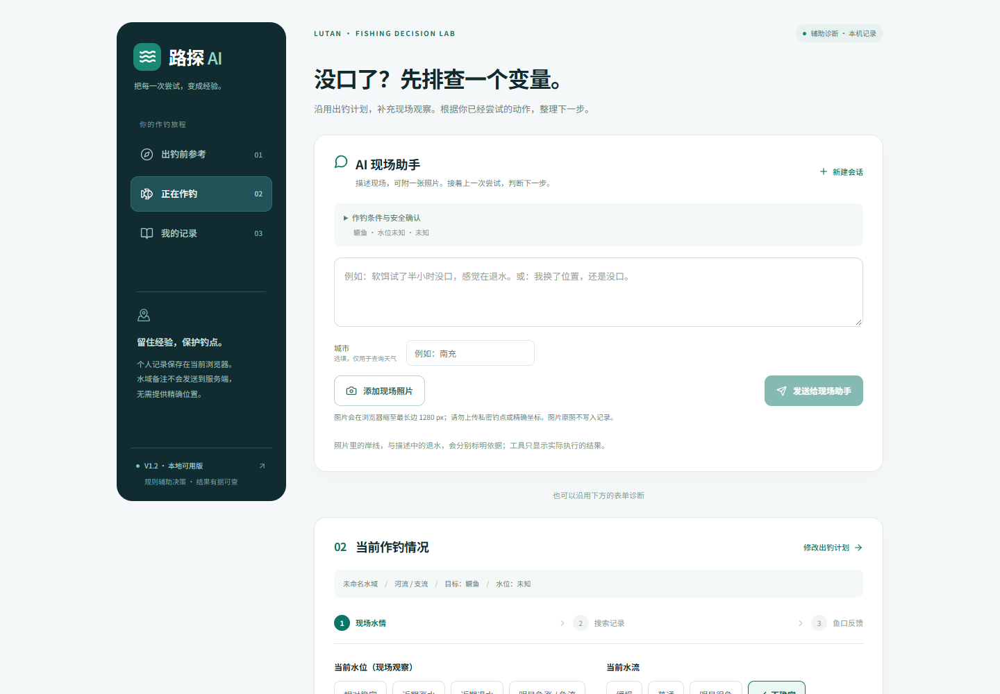

V1.2 增量说明
了解图文、会话、工具调用和事实边界，区分模拟验证与真实联调。
阅读当前实现 docs/V1.2_AGENT.mdDELIVERY / 2026.11
查看当前界面、运行 V1.2 应用，或沿着文档理解规则、模型与已知边界。
解压源码包，安装 Node.js 22.12+，双击根目录 Start-LutanAI.cmd。首次安装依赖需要联网，随后自动构建并打开浏览器。
默认新配置关闭模型。已有配置与环境变量优先；此页面不检测或调用你的 API。
02 / 演示与评审
适合演示者、产品与设计

文字与可选图片、有限工具调用、连续反馈会话已实现。配置、输出校验或服务失败时回到规则。
查看当前手机截图 ↗保留原始三个页面，用手机壳维持移动视口。它早于 V1.2，不展示当前模型能力。
打开历史原型手机演示 ↗03 / 需求定义
适合产品、设计与评审
04 / 研发交付
适合研发与测试